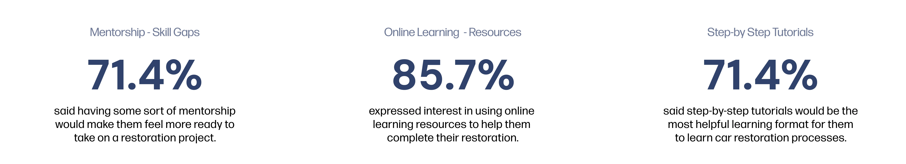
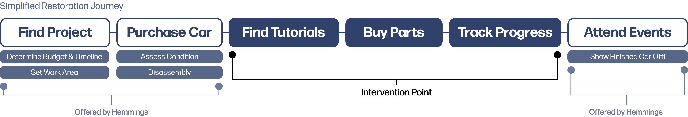
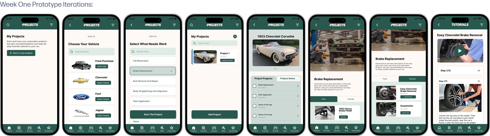
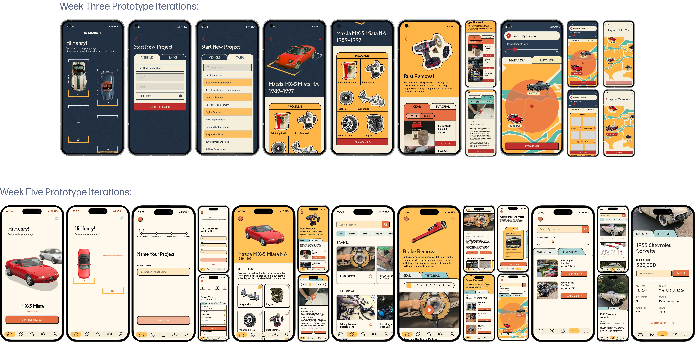

An Academic Project
My Contributions
Duration
5 Weeks (June - August 2025)
Role
Product Design
Interaction Design
Visual Design
Prototyping
Tools
Figma
Google Forms
Team Members
Lauryn Yau
Yumi Kawaoge
Hinata Nozawa
Yasamin Ketabchi
Sarrah Anuva
Introduction
Experience Design: a strategy that allows businesses to create value and engagement in their products through collaboration with designers. This project's purpose was to help us as designers be able to shift our mindset into a more business-centric perspective rather than a strictly design-centric one.
We started off the project by conducting research into different clients that we thought had potential to build their product strategy, and came up with a total of 4 proposals of which one was chosen to be the stongest with the most potential.
Shifting to Hemmings
Initially, the team came up with the idea of adding better and easier maintenance features to the existing Toyota app, including maintenance reminders, better educatiuon about procedures, guidance on how to complete easy procedures yourself, bookings and more.
However, we quickly realized this held no value since Toyota is known for their reliable cars and good maintenance. We had to pivot, and conducted another week of research. This is where we came across Hemmings.
Why Classic Cars?
Our research showed that the classic car market is rapidly growing, with many younger collectors gaining interest in the hobby. The market is valued at 39.7 billion USD globally, and expected to nearly double by 2032 (Chandewade, 2025).
A survey conducted by Hagerty - a classic car insurance company - suggests that Gen Z expressed significantly greater interest in owning a classic car at 60%, compared to 31% of Baby Boomers (Maronese, 2024).
To keep our idea of classic car consistent we defined it as: any car that is over 25 years old (made before the 2000's), valued over $10,000 CAD, and has an intangible value created by its history, rarity, and more.
Who They Are
Hemmings is a hub for classic car enthusiasts, offering services including a marketplace, expert content, and community support. Their mission is to enhance the collector car experience for classic car collectors eveywhere.
Identifying the Disconnect
While I was researching the client, I noticed that the current Hemmings app has very limited usability, with the only available feature on it being the marketplace. This is a stark contrast to their website, which has many more resources available. Overall, on both the website and app, the user jounrey is very scattered, making the restoration process more difficult and frustrating than it needs to be.
This is where I was able to identify a potential area of intervention, turning Hemmings into a platform that follows the entire restoration journey from start to finish.
Problem Statement
Despite rising interest among young enthusiasts in classic car restoration, beginners struggle to start and sustain projects due to skill gaps, scattered resources, and part sourcing challenges, reflecting an overall lack of structured support.
User Research
To further get insight into the problem space, I brainstormed some questions we could ask users about their wants and needs regarding the restoration journey. The team then put together a Google Forms survey, which we got 8 resposes to, as well as secndary research. The results showed the following:

Framing the Problem Space
We started the research and design process by first asking a question that would help us better frame our design, scope and dictate any additional research:
How might we create a centralized platform that streamlines classic car restoration for the younger or new enthusiast through guided support and reliable parts sourcing, while also connecting them to a broader community and events?
To understand the space better, I took a look at the overall restoration journey of a classic car restoration. Having no prior knowledge of this, I had to dig into multiple sites, online forums and other resources to help myself and the team get a general understanding of the user journey a restorer may follow. Since every restorer has their own way of doing things, we compiled the steps into only the ones we found common between mulltiple sources.
We then compared our compiled journey to the Hemmings user journey, and were able to pinpoint intervention points where Hemmings could better retain customers and support more of their restoration process.

Designing the Intervention
Now that we had determined the points of intervention, I started making the quick prototypes of the app for user testing using Hemmings existing brand identity, to determine whether they were actually useful or not. The prototype included a project page addition including: tutorials, parts and progress tracking (images included below). We conducted a think-aloud test, where users completed a specific task on both the existing Hemmings website and the prototyped app. From this testing we found:

Fine Tuning and Iterations
The next couple of weeks were iterations of the UI art direction and interactions, with weekly feedback. Initially, we created a very retro-forward UI to reflect the aesthetics of classic cars, but weren't able to make it work as well as we wanted. We got feedback that the retro UI was too strong and seemed cliché, so I suggested simplifying it and focusing more on the UX and interaction strategy for the time we had left. We ended up with a slightly more retro version of the original art direction of Hemmings' app.
Here are some of the prototype iterations we did!

Final Product
Based on feedback, research, and user testing, we redesigned the Hemmings' app, creating a clearer flow of the classic car restoration journey by compiling all the parts of the process into one streamlined app.
What I Learned
What's Next?
I definitely want to focus on adding back the retro-style art direction after creating a cohesive design language for it, since the interaction and product design is solid now!